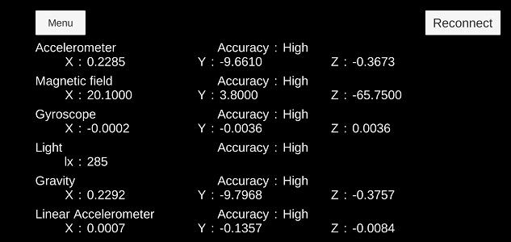

You can get the data of the sensor mounted on the Moverio headset.
| function | contents |
|---|---|
| Sensor value acquisition | Get the value of the sensor |
| Sensor accuracy acquisition | Get sensor accuracy |
| Reconnect | Moverio reconnect |
The above function is implemented by SensorControl / SensorControlRotation / SensorControlHeadset / SensorControlUncalibrated of sample scene

| label | scene |
|---|---|
| Accelerometer | SensorControl |
| Magnetic field | SensorControl |
| Gyroscope | SensorControl |
| Ambient light | SensorControl |
| Gravity | SensorControl |
| Linear accelerometer | SensorControl |
| Rotation vector | SensorControlRotation |
| Game Rotation vector | SensorControlRotation |
| Headset Tap Detect | SensorControlHeadset |
| Headset Motion Detect | SensorControlHeadset |
| Headset Stationary Detect | SensorControlHeadset |
| Uncalibrated Accelerometer | SensorControlUncalibrated |
| Uncalibrated Magnetic field | SensorControlUncalibrated |
| Uncalibrated Gyroscope | SensorControlUncalibrated |
Please refer to [Moverio Basic Function SDK Developer’s Guide] for details of the function.